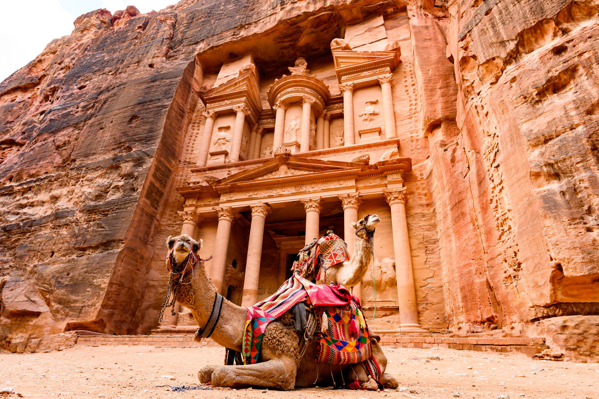
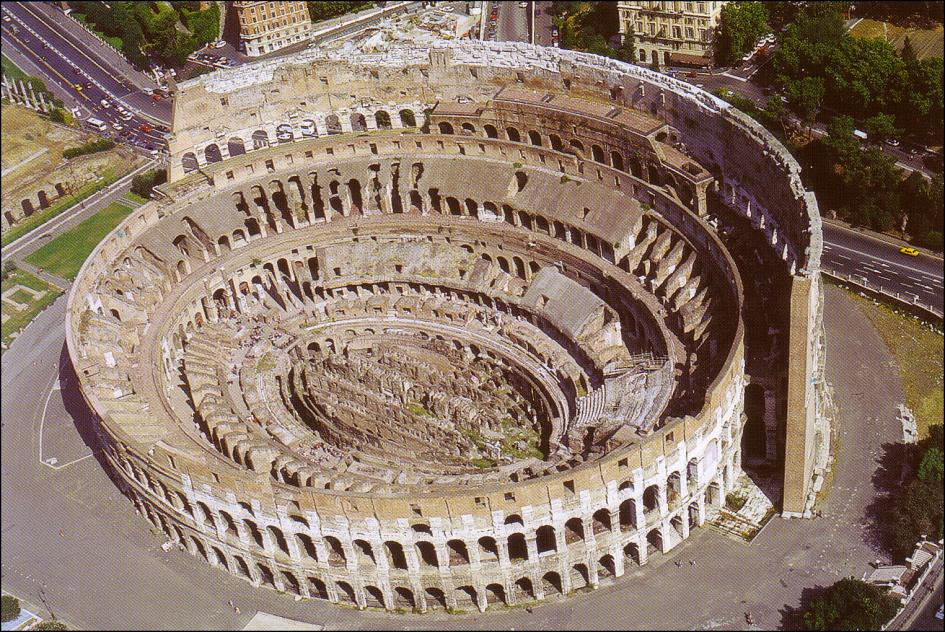
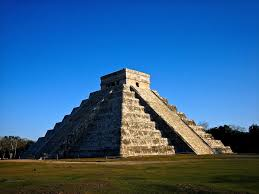

🌎 Las 7 Maravillas del Mundo Moderno

Muralla China
Fue construida alrededor del año 220 a.C. por el primer emperador Qin Shin Huang, quien ordenó reunir los tramos de fortificaciones construidas anteriormente, a fin de crear un sistema de defensa contra las invasiones de los pueblos del Norte.

Petra
Se encuentra en la actual Jordania en un valle remoto, entre montañas de arenisca y acantilados. En parte está esculpida en roca y en parte construida en medio de las montañas sur cadas por pasos y desfiladeros.

Coliseo Romano
El Coliseo de Roma es considerada una proeza de ingeniería construida en el siglo I por orden del emperador Vespasiano, señala Britannica. El anfiteatro mide 189 por 156 metros y cuenta con un complejo sistema de bóvedas.

Chichén Itzá
es una ciudad maya de la península de Yucatán (México) que floreció en los siglos IX y X. De acuerdo con Unesco, esta ciudad sagrada fue uno de los centros más importantes de la civilización maya.

Machu Picchu
Ubicado a 2430 metros de altura en medio de un bosque tropical de montaña, considerado una de las realizaciones arquitectónicas más imponentes del Imperio Inca. .
Cristo Redentor
El emblemático Cristo Redentor que se encuentra en la cima del monte Corcovado en Río de Janeiro (Brasil) es otro de los destinos destacados. La emblemática construcción comenzó en 1926 y finalizó cinco años más tarde. .
Taj Mahal
el Taj Mahal, en la India. Se trata de un imponente mausoleo de mármol blanco edificado entre los años 1631 y 1648 por orden del emperador mogol Shah Jahan para perpetuar la memoria de su esposa favorita, explica la Unesco..
CONTACTOS
Danos tu opinión